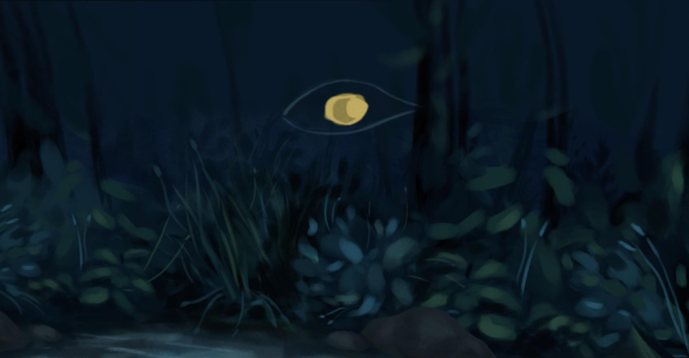
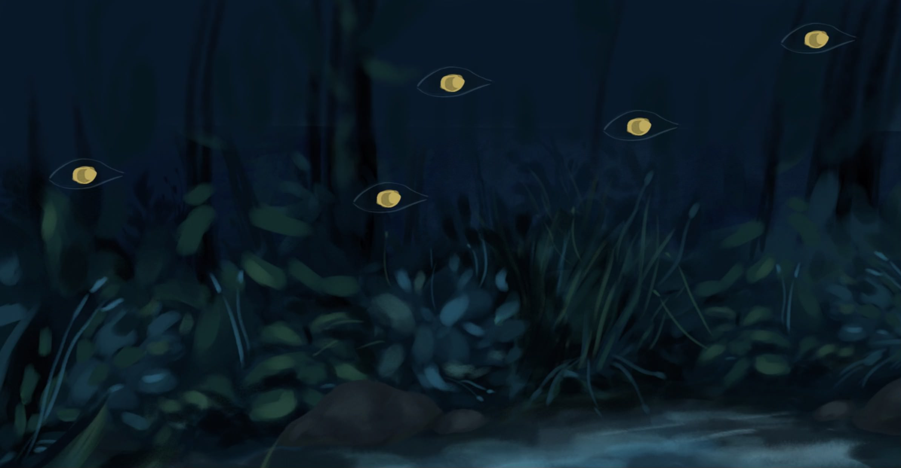
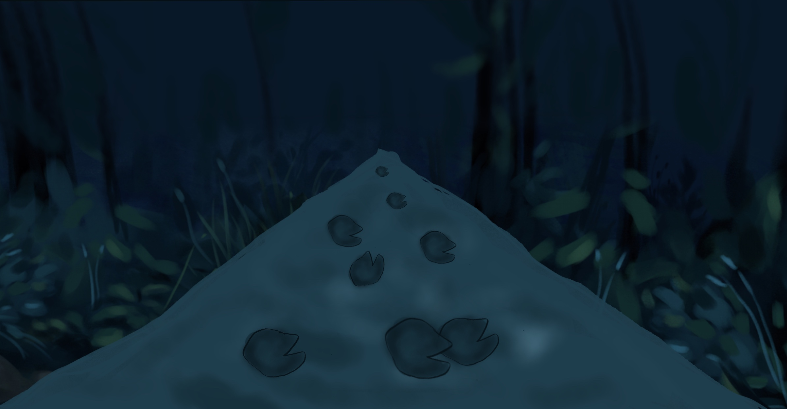
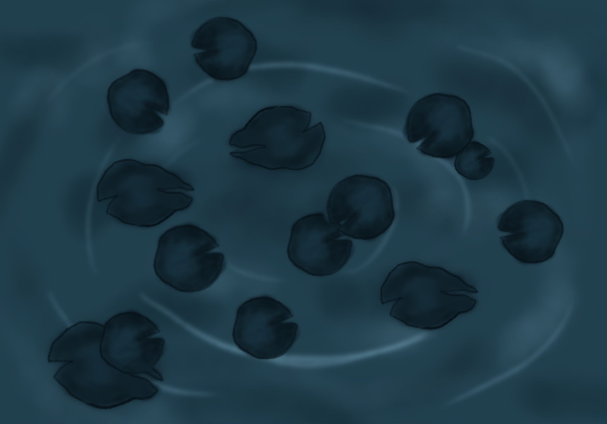

Creative Director | Lead Developer | Sound Designer
Nov - Dec 2022 (1 month)
“How she died (that night)” is an immersive experience that puts you in the shoes of a woman trying to get home. It encapsulates the dangers women face in this patriarchal and misogynistic society and gives you a taste of the petrifying fear we women feel on a daily basis.
CONTEXT
This immersive experience was built for Local Project’s dreamcube——a life size cube with immersive projections that allow for motion tracking and interactions using retroflective materials. The team consisted of 2 people, including myself.
Concept
As Asian women living in NYC, we have experienced countless acts of violence and harassment. Drawing from our personal experiences as well as the many news articles of the rise in violence towards women, particularly Asian women, the story of “how she died that night” was born.
Due to a very short timeframe and being a team of two, we decided to focus on 2 key interactions and streamlined the story: 1) The lily pads signify the way home and the user has to step on it to go home. 2) While going home, the user has to try to get rid of the eyes that appear and constantly follow the user.
Design decisions
Sound design: To make it a seamless experience, we incorporated the “instructions” to “follow the lily pad” and to “poke the eyes” in the narration of the sound design. When testing, users were able to intuitively carry out the tasks without difficulty and the sound design was successful.
The ending: We decided to only have one ending, mimicking games where you have a false illusion of agency and or effect on the outcome of the game. We wanted to magnify the feeling of helplessness, that no matter how hard you tried to get home safe, the system is rigged against you. This worked really well and we received positive feedback from users.
We tried to design 2D assets (pictured below) and using it in Local Project's Dream Cube. Unfortunately, it lacked depth and more importantly, there were some issues with building out 2D objects that could collide with the retroflective object as it is in a 3D world. Hence, we pivoted and started designing 3D assets.

Coding the interactions
After making the pivot to use 3D objects, I managed to get the eyes to track the user and achieve this eerie effect of being followed. Here's a user tester poking the eyes with the retroflective ball:
It was challenging to program as we had to take into account the existing code structure of the dream cube and how it would interact with the new code. Furthermore, we only had a total of about 5 hours or less to test in the dream cube in the entire project time. This made things really difficult to debug as things could work in Unity's preview but when put into the actual dream cube itself, bugs that never showed up in the preview appeared. We had to also change the 2D cube background into a 3D one for further coding of the interaction.
It was so rewarding to hear great feedback during the final demo. The playtester was a man and it was great to hear that he could really empathize with the dangers women have to go through and that the interaction and sound design were extremely effective. It was my personal goal to help people who may not experience these dangers to have a taste of what it might be like and I'm really glad he walked away with a greater sense of empathy. We received a lot of praise on the storytelling and I'm glad we kept the interactions simple yet immersive as it increased the impact of the experience.
Looking into the future regarding this project, I hope to experiment with other options instead of a ball and possibly using 2 objects at the same time instead of 1 Object 1---Stick: to resemble weapons women carry to keep themselves safe Object 2---Shoes: to simply step on the lily pads rather than using your hands to “step” on the lily pads